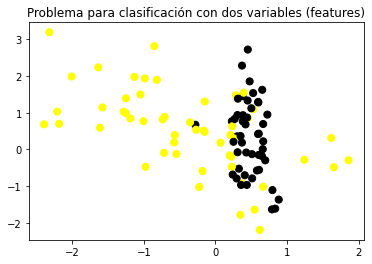
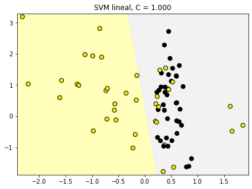
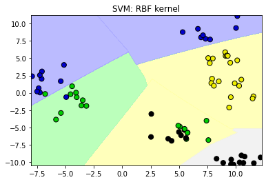
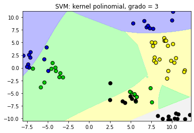
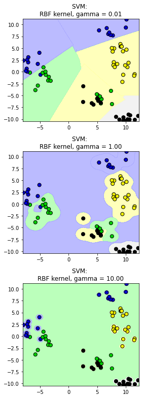

Support Vector Machines#
SVM Lineal#
Generamos los datos
from sklearn.datasets import make_classification, make_blobs
#%matplotlib notebook
import matplotlib.pyplot as plt
from matplotlib.colors import ListedColormap
cmap_bold = ListedColormap(['#FFFF00', '#00FF00', '#0000FF','#000000'])
# synthetic dataset for classification (binary)
plt.figure()
plt.title('Problema para clasificación con dos variables (features)')
X_C2, y_C2 = make_classification(n_samples = 100, n_features=2,
n_redundant=0, n_informative=2,
n_clusters_per_class=1, flip_y = 0.1,
class_sep = 0.5, random_state=0)
plt.scatter(X_C2[:, 0], X_C2[:, 1], c=y_C2,
marker= 'o', s=50, cmap=cmap_bold)
plt.show()

Clasificador SVM lineal#
from sklearn.svm import SVC
from shared_utilities import plot_class_regions_for_classifier_subplot
from sklearn.model_selection import train_test_split
X_train, X_test, y_train, y_test = train_test_split(X_C2, y_C2, random_state = 0)
fig, subaxes = plt.subplots(1, 1, figsize=(7, 5))
this_C = 1.0
clf = SVC(kernel = 'linear', C=this_C).fit(X_train, y_train)
title = 'SVM lineal, C = {:.3f}'.format(this_C)
plot_class_regions_for_classifier_subplot(clf, X_train, y_train, None, None, title, subaxes)

Clasificador SVM lineal: parámetro C#
from sklearn.svm import LinearSVC
from shared_utilities import plot_class_regions_for_classifier
X_train, X_test, y_train, y_test = train_test_split(X_C2, y_C2, random_state = 0)
fig, subaxes = plt.subplots(1, 2, figsize=(8, 4))
for this_C, subplot in zip([0.00001, 100], subaxes):
clf = LinearSVC(C=this_C).fit(X_train, y_train)
title = 'SVM lineal, C = {:.5f}'.format(this_C)
plot_class_regions_for_classifier_subplot(clf, X_train, y_train,
None, None, title, subplot)
plt.tight_layout()
/Users/victormorales/opt/anaconda3/lib/python3.9/site-packages/sklearn/svm/_base.py:1206: ConvergenceWarning: Liblinear failed to converge, increase the number of iterations.
warnings.warn(
Aplicación#
from sklearn.datasets import load_breast_cancer
# Breast cancer dataset para clasificación
cancer = load_breast_cancer()
(X_cancer, y_cancer) = load_breast_cancer(return_X_y = True)
from sklearn.svm import LinearSVC
X_train, X_test, y_train, y_test = train_test_split(X_cancer, y_cancer, random_state = 0)
clf = LinearSVC().fit(X_train, y_train)
print('Datos de cáncer de mama')
print('Precisión de SVM lineal en el conjunto de entrenamiento: {:.2f}'
.format(clf.score(X_train, y_train)))
print('Precisión de SVM lineal en el conjunto de prueba: {:.2f}'
.format(clf.score(X_test, y_test)))
Datos de cáncer de mama
Precisión de SVM lineal en el conjunto de entrenamiento: 0.92
Precisión de SVM lineal en el conjunto de prueba: 0.94
/Users/victormorales/opt/anaconda3/lib/python3.9/site-packages/sklearn/svm/_base.py:1206: ConvergenceWarning: Liblinear failed to converge, increase the number of iterations.
warnings.warn(
SVM con Kernels#
# Conjunto de datos no separable
X_D2, y_D2 = make_blobs(n_samples = 100, n_features = 2, centers = 8,
cluster_std = 1.3, random_state = 4)
from sklearn.svm import SVC
from shared_utilities import plot_class_regions_for_classifier
X_train, X_test, y_train, y_test = train_test_split(X_D2, y_D2, random_state = 0)
# El kernel por defecto es radial(RBF)
plot_class_regions_for_classifier(SVC().fit(X_train, y_train),
X_train, y_train, None, None,
'SVM: RBF kernel')
# Comparamos las regiones de decisión con un kernel polinomial, grado = 3
plot_class_regions_for_classifier(SVC(kernel = 'poly', degree = 3)
.fit(X_train, y_train), X_train,
y_train, None, None,
'SVM: kernel polinomial, grado = 3')


SVM: el parámetros gamma#
from shared_utilities import plot_class_regions_for_classifier
X_train, X_test, y_train, y_test = train_test_split(X_D2, y_D2, random_state = 0)
fig, subaxes = plt.subplots(3, 1, figsize=(4, 11))
for this_gamma, subplot in zip([0.01, 1.0, 10.0], subaxes):
clf = SVC(kernel = 'rbf', gamma=this_gamma).fit(X_train, y_train)
title = 'SVM: \nRBF kernel, gamma = {:.2f}'.format(this_gamma)
plot_class_regions_for_classifier_subplot(clf, X_train, y_train,
None, None, title, subplot)
plt.tight_layout()

SVM: escenarios para C y gamma#
from sklearn.svm import SVC
from shared_utilities import plot_class_regions_for_classifier_subplot
from sklearn.model_selection import train_test_split
X_train, X_test, y_train, y_test = train_test_split(X_D2, y_D2, random_state = 0)
fig, subaxes = plt.subplots(3, 4, figsize=(15, 10), dpi=50)
for this_gamma, this_axis in zip([0.01, 1, 5], subaxes):
for this_C, subplot in zip([0.1, 1, 15, 250], this_axis):
title = 'gamma = {:.2f}, C = {:.2f}'.format(this_gamma, this_C)
clf = SVC(kernel = 'rbf', gamma = this_gamma,
C = this_C).fit(X_train, y_train)
plot_class_regions_for_classifier_subplot(clf, X_train, y_train,
X_test, y_test, title,
subplot)
plt.tight_layout(pad=0.4, w_pad=0.5, h_pad=1.0)
---------------------------------------------------------------------------
KeyboardInterrupt Traceback (most recent call last)
Input In [8], in <cell line: 10>()
13 title = 'gamma = {:.2f}, C = {:.2f}'.format(this_gamma, this_C)
14 clf = SVC(kernel = 'rbf', gamma = this_gamma,
15 C = this_C).fit(X_train, y_train)
---> 16 plot_class_regions_for_classifier_subplot(clf, X_train, y_train,
17 X_test, y_test, title,
18 subplot)
19 plt.tight_layout(pad=0.4, w_pad=0.5, h_pad=1.0)
File ~/Documents/Consultorias&Cursos/CURSOS/Cooking/MLPython/pyML/shared_utilities.py:107, in plot_class_regions_for_classifier_subplot(clf, X, y, X_test, y_test, title, subplot, target_names, plot_decision_regions)
104 y_max = X[:, 1].max()
105 x2, y2 = numpy.meshgrid(numpy.arange(x_min-k, x_max+k, h), numpy.arange(y_min-k, y_max+k, h))
--> 107 P = clf.predict(numpy.c_[x2.ravel(), y2.ravel()])
108 P = P.reshape(x2.shape)
110 if plot_decision_regions:
File ~/opt/anaconda3/lib/python3.9/site-packages/sklearn/svm/_base.py:791, in BaseSVC.predict(self, X)
789 y = np.argmax(self.decision_function(X), axis=1)
790 else:
--> 791 y = super().predict(X)
792 return self.classes_.take(np.asarray(y, dtype=np.intp))
File ~/opt/anaconda3/lib/python3.9/site-packages/sklearn/svm/_base.py:416, in BaseLibSVM.predict(self, X)
414 X = self._validate_for_predict(X)
415 predict = self._sparse_predict if self._sparse else self._dense_predict
--> 416 return predict(X)
File ~/opt/anaconda3/lib/python3.9/site-packages/sklearn/svm/_base.py:435, in BaseLibSVM._dense_predict(self, X)
427 raise ValueError(
428 "X.shape[1] = %d should be equal to %d, "
429 "the number of samples at training time"
430 % (X.shape[1], self.shape_fit_[0])
431 )
433 svm_type = LIBSVM_IMPL.index(self._impl)
--> 435 return libsvm.predict(
436 X,
437 self.support_,
438 self.support_vectors_,
439 self._n_support,
440 self._dual_coef_,
441 self._intercept_,
442 self._probA,
443 self._probB,
444 svm_type=svm_type,
445 kernel=kernel,
446 degree=self.degree,
447 coef0=self.coef0,
448 gamma=self._gamma,
449 cache_size=self.cache_size,
450 )
KeyboardInterrupt:
Aplicación (datos no normalizados)#
from sklearn.svm import SVC
X_train, X_test, y_train, y_test = train_test_split(X_cancer, y_cancer,
random_state = 0)
clf = SVC(C=10).fit(X_train, y_train)
print('Datos de cáncer de mama (sin normalizar)')
print('Precisión de SVM con kernel RBF en los datos de entrenamiento: {:.2f}'
.format(clf.score(X_train, y_train)))
print('Precisión de SVM con kernel RBF en los datos de prueba: {:.2f}'
.format(clf.score(X_test, y_test)))
Datos de cáncer de mama (sin normalizar)
Precisión de SVM con kernel RBF en los datos de entrenamiento: 0.92
Precisión de SVM con kernel RBF en los datos de prueba: 0.94